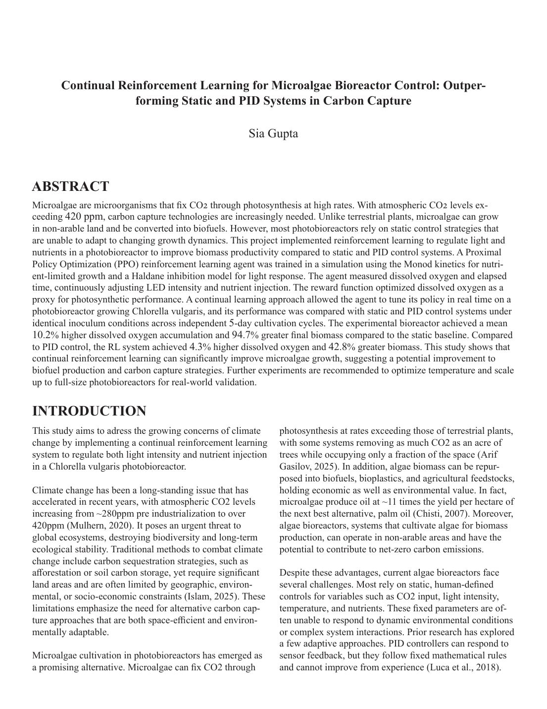
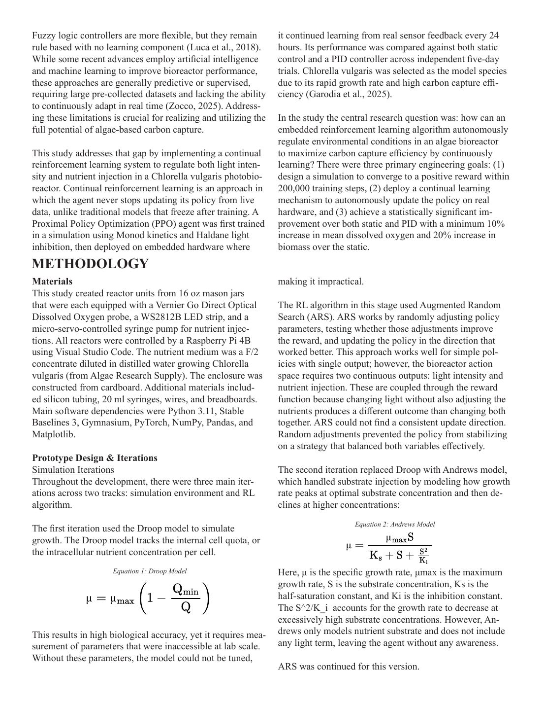
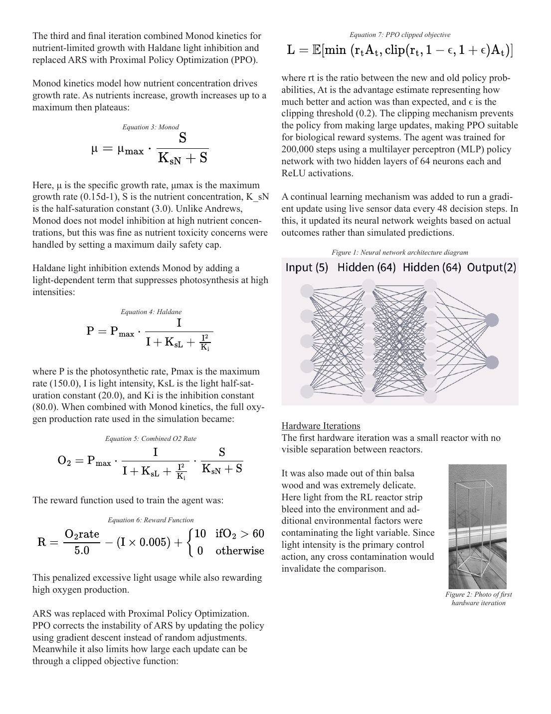
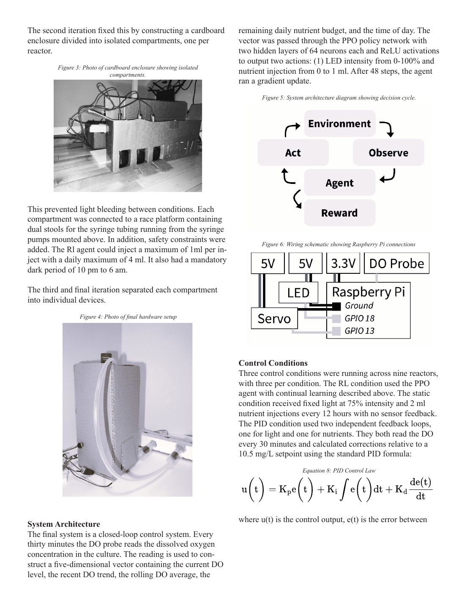
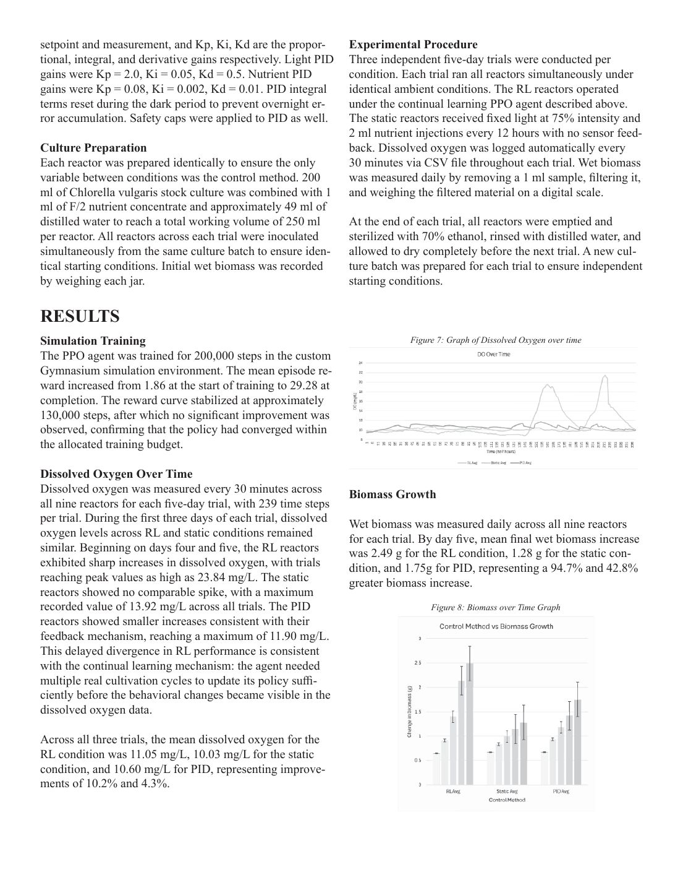
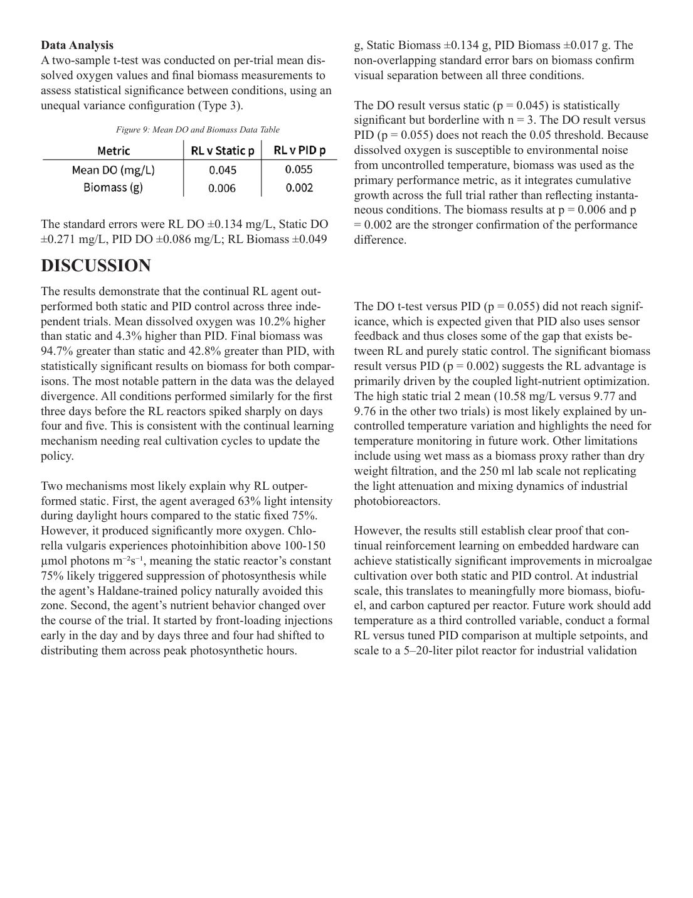
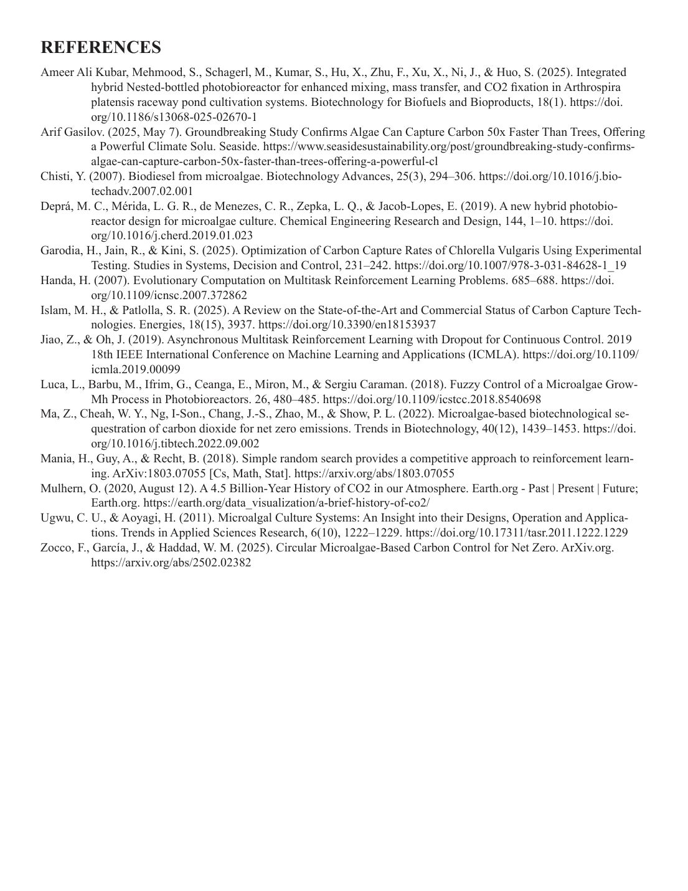
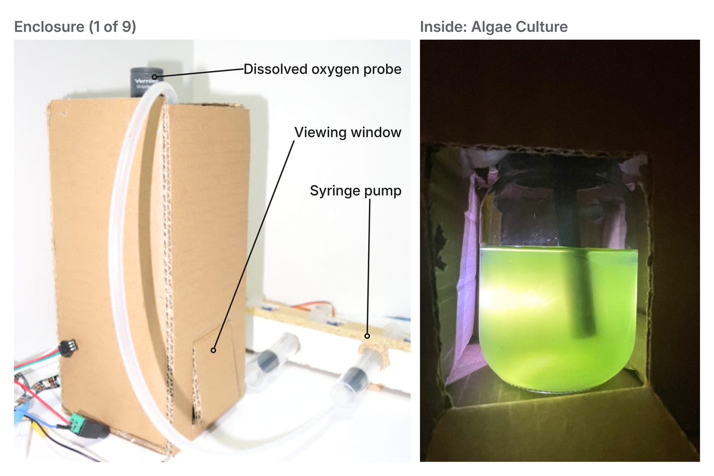
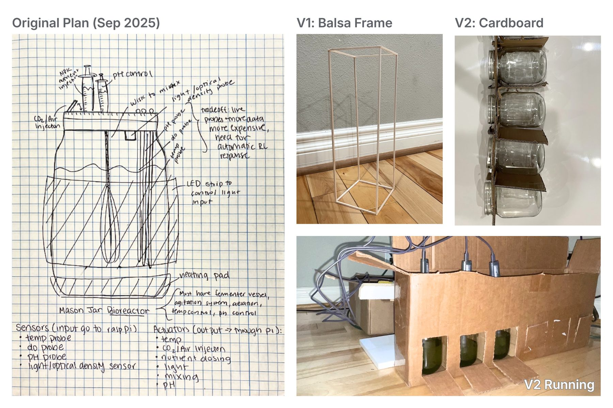
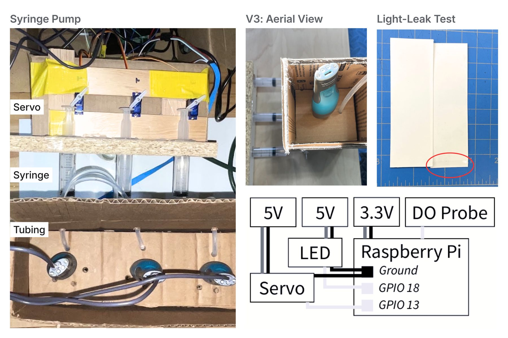

Can AI teach itself to grow algae faster? Nine bioreactors, each run by a reinforcement learning agent that keeps learning from its own jar. 1st Place Robotics and Top 20 Overall of 1,100 at WSSEF 2026.








Microalgae fix CO₂ at high rates, yet the systems that grow them (photobioreactors) operate at ~20% max efficiency because they rely on static controls. But the needs are constantly changing (ex: as the culture gets denser, the cells block light from each other and use nutrients faster). I built a bioreactor that adjusts conditions as the algae grow. Every half hour, the reinforcement learning agent on a Raspberry Pi reads the dissolved oxygen, sets the LED brightness, and decides how much nutrient to dispense. Every 24 hours, it retrains on what actually happened in its own jar. This is one of nine identical units I built. As one of my mentors put it, not every project needs AI, so I built a PID controller to compete. Over nine five-day trials, the RL reactor grew 42.8% more biomass than PID and 94.7% more than static. The next two images show how I built it.

My initial plan (left) tried to control everything. But because of the size and pricing, I decided to start with one sensor (dissolved oxygen) and two controls (nutrients and light). I created the simulation first. After trying the Droop model (which had too many parameters, like internal cell quota) and the Andrews model (which didn't account for light), I combined Monod kinetics and Haldane to model growth rate. Because Augmented Random Search was too variable for a biological species, I used Proximal Policy Optimization. As I built the hardware, I quickly realized balsa was too flimsy and would have too much light leak (V1), so I switched to cardboard with dividers and flap windows (V2). It was still highly cramped, so I switched to isolated compartments like the one in the prior image.

I built 9 copies of the final reactor. I used addressable LED strips so that every LED can be set individually and each reactor can control its own brightness on a 0-255 scale. To check that the room light stayed out, I sealed photographic film inside one with the lights on and developed it, catching a small leak which I sealed. Syringes were in my initial sketch for nutrient disposal, but I wasn't sure how to control one. Instead of buying a peristaltic pump, I used a microservo instead. It suited it well because it moves to an exact angle so the same command pushes the plunger the same distance every time. When I calibrated each servo, it could only consistently push between 7 to 3 ml, and so the code resets the servo each day for a refill. Next, I want to add temperature control, since it's a major growth factor that my current version doesn't address. I also want to test PID controllers tuned to different oxygen targets and gain settings.